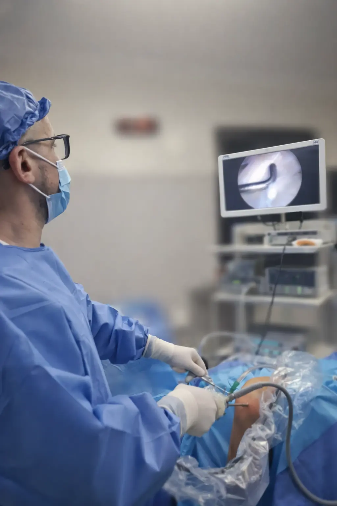

Podés hacer todo bien y aún así
sentirte lejos de tu máximo potencial.
Porque el problema muchas veces no está en tus hábitos, sino en cómo responde tu organismo.
Sin traslados · Desde cualquier lugar del mundo
Tu chequeo anual dice que estás bien.
Tu cuerpo siente otra cosa.
A partir de los 35 años, la disfunción metabólica y el descenso hormonal son reales. Pero los análisis de rutina siguen diciendo que está todo bien.
Fatiga. Bajo rendimiento. Baja libido. Falta de enfoque. El problema no sos vos — es que no te hicieron los estudios necesarios para hacer un diagnóstico correcto.
99%
de los análisis tradicionales no evalúan hormonas, vitaminas, minerales, oligoelementos, metales pesados ni estado inflamatorio sistémico.
Por eso los papeles dicen una cosa y tu cuerpo siente otra.
¿Te identificás con alguno de estos?
Fatiga crónica
Cansancio que no desaparece aunque descanses correctamente
Alteraciones del sueño
Dificultad para conciliar o mantener un sueño reparador
Bajo rendimiento
Físico y mental, incluso entrenando y alimentándote bien
Baja libido
Pérdida de deseo y motivación
Falta de enfoque
Mente dispersa, dificultad para concentrarte
Medicina de vanguardia.
Aplicada al bienestar real.
No trato síntomas. Identifico por qué se están generando y para corregirlo desde la raíz.
Diagnóstico de precisión
Evalúo hormonas, vitaminas, minerales, oligoelementos, metales pesados y marcadores inflamatorios que los chequeos convencionales ignoran.
Identificación del desequilibrio exacto
Identifico el disbalance específico de tu metabolismo con la evidencia científica más actualizada.
Plan de optimización a tu medida
Diseño un plan de tratamiento exclusivo para vos según tus necesidades. Tu biología, tu plan.
"No te acostumbres a vivir a medias. Estás solo a una consulta de volver a sentirte con la energía y la vitalidad para disfrutar al máximo cada etapa de tu vida."
Historias de Optimización
Casos reales de pacientes que recuperaron su vitalidad
Video próximamente
Paciente, 42 años
Fatiga + bajo rendimiento deportivo
Descripción del caso: qué síntomas tenía, qué se encontró en el diagnóstico y cómo mejoró con el protocolo.
Video próximamente
Paciente, 38 años
Falta de enfoque + baja libido
Descripción del caso: qué síntomas tenía, qué se encontró en el diagnóstico y cómo mejoró con el protocolo.
Video próximamente
Paciente, 47 años
Descenso hormonal + fatiga crónica
Descripción del caso: qué síntomas tenía, qué se encontró en el diagnóstico y cómo mejoró con el protocolo.
Estés donde estés,
Podés cambiar tu vida hoy mismo
A través de una videollamada evalúo tu caso, reviso tus estudios y diseño tu plan de tratamiento personalizado. Todo 100% online.
Desde cualquier lugar del mundo
Sin importar en qué país estés.
Sin esperas ni traslados
Reservás y te conectás desde donde quieras.
Agendá tu turno
Reserva tu videoconsulta y volvé a vivir plenamente. Te contactaremos a la brevedad.
Te espero.

Soy el
Dr. Juan Tessari.
A diario recibo pacientes que se cuidan, entrenan y comen bien, pero sufren en silencio el impacto del declive biológico.
El objetivo no es buscar una enfermedad sino conocer con precisión cómo está funcionando el organismo para tener un estado de salud óptimo, una mejor calidad de vida y una longevidad saludable. Llevo más de 18 años devolviéndole la calidad de vida a mis pacientes con la formación médica más actualizada.
Preguntas Frecuentes
¿Para quién es esta consulta?
Para hombres y mujeres a partir de los 30-35 años que sienten que su rendimiento, energía, estado de ánimo o libido no están donde deberían. También para quienes buscan un enfoque preventivo.
¿En qué se diferencia de un chequeo médico común?
Un chequeo convencional solo busca enfermedades. Este enfoque evalúa si tu organismo está funcionando en su nivel óptimo. Evaluamos hormonas, vitaminas, minerales, oligoelementos, metales pesados y marcadores inflamatorios que los "chequeos de rutina" no incluyen.
¿Cómo funciona la videoconsulta?
Reservás tu turno a través del formulario. Nos conectamos por videollamada, evaluamos tu caso y realizamos los estudios necesarios para luego definir tu protocolo de optimización personalizado. Todo puede gestionarse 100% online.
¿Necesito estudios previos?
No es necesario contar con ningún estudio. En la primer consulta evalúo tu caso y te indico exactamente qué estudios debemos realizar.
¿Atendés fuera de Argentina?
Sí. La videoconsulta permite atender desde cualquier lugar del mundo. Todo el proceso es completamente online.
Este servicio es 100% online. La Optimización Metabólica y Longevidad se inicia y se sostiene completamente por videoconsulta. No requiere asistir a consultorio en ninguna etapa del tratamiento.
Dejá de normalizar
vivir sin energía.
Recuperá tu vitalidad. Volvé a vivir con plenitud y disfrutá de una longevidad saludable.